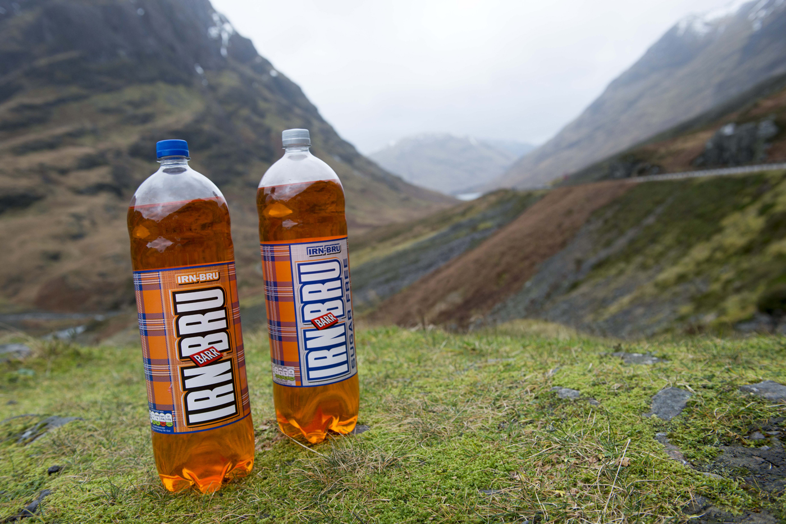
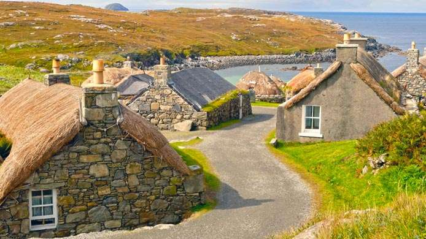
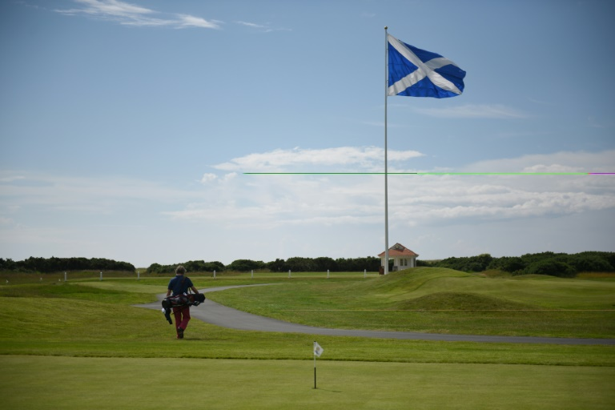

A Escócia é realmente um país fascinante. Além dos estereótipos típicos deste país (como as saias kilts, o whisky, os castelos medievais e as gaitas de fole), há muito mais coisa que vale aprender sobre este lugar tão frio quanto simpático.
Reserve sua passagem.Para muitos, o Festival Internacional de Edimburgo é o maior evento de manifestações artísticas no mundo todo. Ele teve sua primeira edição em 1947 e segue acontecendo anualmente, com duração de 3 semanas. Para se ter uma ideia da grandiosidade deste evento, veja só: ele envolve o Festival Fringe, focado em obras e espetáculos fora dos padrões convencionais; o Festival Internacional de Filme (EIFF), considerado a mostra de cinema mais antiga do mundo; e o Festival Internacional do Livro, que reúne escritores, músicos, e outros artistas. Dá para dizer então que este é um país que respira cultura.
A Escócia é um dos únicos países do mundo em que a Coca-Cola não é o refrigerante mais vendido. Isto acontece porque o refrigerante local Irn Bru é o líder de vendas. Dizem que é difícil descrever o sabor do Irn Bru. Mas o fato é que ele é superdoce e lembra um pouco a experiência de beber um chiclet
A Escócia é um país rodeado por ilhas. O governo registra a existência de quase 800 pequenas ilhas no entorno da parte continental. E o mais curioso é que a maior parte delas é desabitada: apenas cerca de 100 ilhas têm algum ser humano vivendo nela
O esporte do golfe foi inventado na Escócia medieval, por volta de 1400. O jogo foi criado tendo como inspiração um esporte romano chamado Paganica que era praticado com uma bola e um taco. Mesmo que o rei James II tenha proibido a prática no país em 1457, o fato é que o esporte continuou se espalhando e logo chegou no mundo inteiro. Já as regras do golfe, válidas até hoje, foram estabelecidas no ano de 1744, na cidade de Edimburgo, capital da Escócia. Elas foram criadas pelo primeiro clube de golfe do mundo, o The Gentlemen Golfers of Leith.
